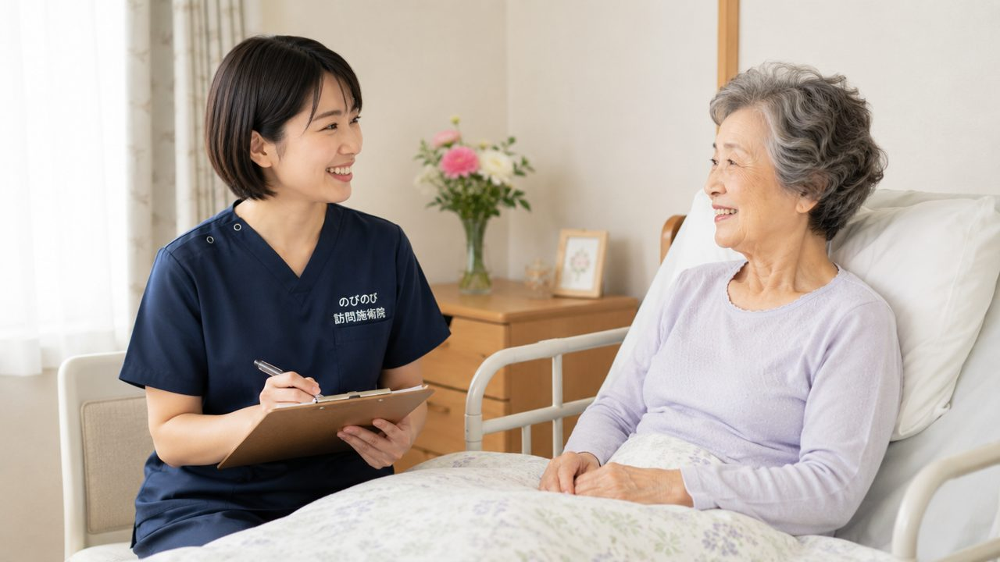

傷はとうに治っているのに、体を丸めた姿勢のくせだけが残っている方は珍しくありません。ストーマのある方に訪問の施術を受けていただくときの約束ごとを整理します。
短くまとめます。ストーマがあること自体は、はり・きゅうの療養費の対象にはなりません。ただ、おなかをかばう姿勢から強くなった腰痛症や五十肩、頸肩腕症候群、神経痛などで医師の同意が得られれば、医療保険を使って自宅で施術を受けられます。装具の上から押さない、うつ伏せにしない、おなかにお灸を置かない。こうした約束ごとを最初に決めて進めます。費用は1回3,950円、1割負担の方で約395円です。
ストーマそのものは保険の対象になりますか
大腸や膀胱の手術で人工肛門・人工膀胱をつくられた方から、訪問の鍼灸マッサージを受けられるかとお尋ねをいただきます。はじめにお伝えすると、ストーマがあること自体が、はり・きゅうの療養費の対象になるわけではありません。保険で受けられるかは、体のどこに痛みやこわばりが出ていて、そこに医師の同意があるかで決まります。
実際には、手術のあとの姿勢の変化から腰の痛みが強くなった、装具を扱う動作で肩が上がらなくなった、という方がよくいらっしゃいます。腰痛症、五十肩、頸肩腕症候群、神経痛。こうした病名で同意書を書いていただければ、自宅で受けられます。ただし同じ部位で医療機関のリハビリを受けている期間は重ねられませんので、そこは主治医に確かめます。
おなかをかばう姿勢が、腰や背中に出てくる
おなかに傷があると、多くの方が知らず知らず体を丸めます。前かがみのまま座り、立ち上がるときも腰から先に伸ばせない。この姿勢が続くと、背中の筋肉は引き伸ばされたまま張り、腰の下のほうには縮んだままの硬さが残ります。傷はとうに治っているのに、姿勢のくせだけが残っている方は珍しくありません。
装具の交換は、鏡を見ながら片手を前に伸ばし、もう一方でおなかを支える姿勢になります。これを何年も続ければ、肩の前と肩甲骨のあいだに負担が集まります。交換のときだけ肩がつるようになった。そう話される方には、肩まわりから背中にかけて手を当て、腕を上げる途中で引っかかる場所を探していきます。
初回にうかがっていること
最初の訪問では、消化管か尿路か、装具は単品系か二品系か、交換の間隔と曜日、便や尿が出やすい時間帯をうかがいます。体に触れる前の段取りの確認ですから、傷やストーマを見せていただく必要はありません。ご本人が話しにくいところは、ご家族や訪問看護師から教えていただきます。
あわせて、手術がいつだったか、ストーマのまわりが膨らむ傍ストーマヘルニアを指摘されていないか、腹帯やベルトを使っているかも確認します。膨らみがある方には、その部位に触れず、腹圧のかかる動きも入れません。うかがった内容は記録に残し、担当が替わっても同じ扱いになるようにしています。
施術中に守っている約束ごと
装具の上から押したり、面板のふちを引っぱったりはしません。うつ伏せは装具を体重で圧迫するため原則としてとらず、横向きか仰向け、座ったままで進めます。横向きではストーマのある側を上にして、下になる脇腹にタオルで高さをつくり、袋がつぶれないようにします。
おなかにお灸は置きません。装具のまわりの皮膚は貼ってはがす繰り返しでもともと弱く、熱の加減が読みにくいためです。鍼も腹部は使わず、腰や背中、脚、肩まわりを中心にします。体勢を変えるときは先に声をかけ、袋の中身が動く感覚を不快に思われないかを確かめながら進めます。
訪問の時間はいつごろが受けやすいですか
便や尿がたまった状態で横になると、袋の重さや漏れが気になって体の力が抜けません。訪問の枠は、装具を交換した直後や、食後で出やすい時間帯を外して決めるとよいです。午前の遅い時間なら落ち着いている、夕方は避けたい。そうした一日の流れに合わせて曜日と時間を固定します。
施術の前に袋の中身を出しておいていただけると、体勢を選びやすくなります。途中でトイレに立ちたくなったときは、遠慮なく中断してかまいません。料金は時間ではなく回数で決まりますから、区切って進めても金額は変わりません。
腹圧をかけない起き上がり方と、動く量を保つこと
腹圧が急にかかる動作が重なると、ストーマのまわりが膨らんでくることがあります。仰向けから腹筋の力で一気に起き上がる、重い物を胸の前で持ち上げる、便を出そうといきむ。こうした場面を減らしたいところです。起き上がりは、いったん横を向いて肘でベッドを押し、脚を下ろす反動で上体を起こす順にすると、おなかへの負担が軽くなります。この動きは脚と体側にやわらかさがないと続かないので、施術でそこを整えてから一緒に練習します。
漏れや匂いが心配で外出を控えるようになった、という話もよくうかがいます。歩く時間が減れば脚の力は落ち、股関節と膝はかたくなります。外に出るかどうかはご本人が決めることですが、家の中でつかまり立ちや足踏みを続けられる状態は保っておきたいところです。痛くて動きたくない場所を減らすことが、活動量を守ることにつながります。
皮膚や食事のことは、どこに相談すればよいですか
装具まわりの皮膚が赤い、かゆい、ただれてきた。こうした処置は医療機関の役目です。病院にはストーマ外来があり、皮膚・排泄ケア認定看護師が装具の選び直しや貼り方の相談に応じています。訪問看護を使っておられるなら、まずそちらへ。気づいたことはご家族と担当のケアマネジャーにもお伝えします。
食事や水分のとり方も、術式や残っている腸の長さによって指示が違います。これを食べれば整う、といったことは申しません。おなかの張り具合や排出の様子にふだんと違うところがあれば記録に書き、次に医療者に会うときの材料にしていただきます。
費用はどれくらいかかりますか
医療保険を使った場合、1回あたりの総額は3,950円です。自己負担が1割の方で約395円、2割で790円、3割で1,185円になります。表示の料金のほかに出張料などを別にいただくことはなく、お住まいの場所で金額が変わることもありません。
お支払いは月ごとにまとめてで、その月にどんな施術をしたかが分かる明細をお渡しします。医療保険で行うため、介護保険の支給限度額とは別枠です。訪問看護やヘルパー、デイサービスの回数を削らずに足していただけます。
ストーマにこんな変化があったら、受診が先です
ストーマの色がどす黒く、あるいは暗い赤に変わった。粘膜からの出血が止まらない。おなかの中に引き込まれるように陥没した。こうした変化に気づいたら、当日のうちに主治医へ連絡してください。おなかの張りと痛みに吐き気が加わり、便もガスも出なくなったときは腸閉塞のおそれがあり、救急の受診が必要です。
ストーマのまわりが急に大きく膨らみ、押しても戻らず痛むときも同じです。ほかに、皮膚のただれが広がってきた、熱が続く、尿路のストーマで尿がにごり腰や背中が痛む。こうした場合も受診が先になります。訪問時に気づいたときは、その日の施術を見合わせ、ご家族と関係する方々へお伝えします。
申し込みから始まるまで
お電話をいただいたら、まず体の状態と、ストーマのことでどこに気をつければよいかをうかがいます。同意書は主治医に書いていただくものですが、書式の用意や医師への説明は当院で行います。要介護認定は必要なく、認定を受けていない方でも受けられます。
うかがえる範囲もお伝えしておきます。大阪府北部が豊中市・吹田市・茨木市・高槻市・箕面市・摂津市・池田市、兵庫県側が尼崎市・伊丹市、大阪市内が淀川区・東淀川区・都島区・北区・旭区。合わせて14の市と区です。まずはお電話で、今どこがつらいのかをお聞かせください。
ほかの症状もあわせてお探しの方は相談の多い症状から探す、持病や体の状態から探したい方は持病や体の状態から探すをご覧ください。料金や同意書などの段取りは料金・同意書・制度のよくある疑問にまとめています。
よくある質問
ストーマがあっても施術を受けられますか？
受けられます。ストーマそのものは保険の対象になりませんが、おなかをかばう姿勢から出てきた腰や肩の痛みについて医師の同意があれば、医療保険で受けられます。
うつ伏せになる必要がありますか？
ありません。装具を体重で圧迫するため、うつ伏せは原則としてとりません。横向きか仰向け、座ったままで進めます。横向きではストーマのある側を上にします。
おなかにお灸や鍼はしますか？
しません。装具のまわりの皮膚は貼ってはがす繰り返しで弱くなっており、熱の加減も読みにくいためです。腰や背中、脚、肩まわりを中心にします。
途中でトイレに立ってもいいですか？
遠慮なく中断してください。料金は時間ではなく回数で決まりますので、区切って進めても金額は変わりません。